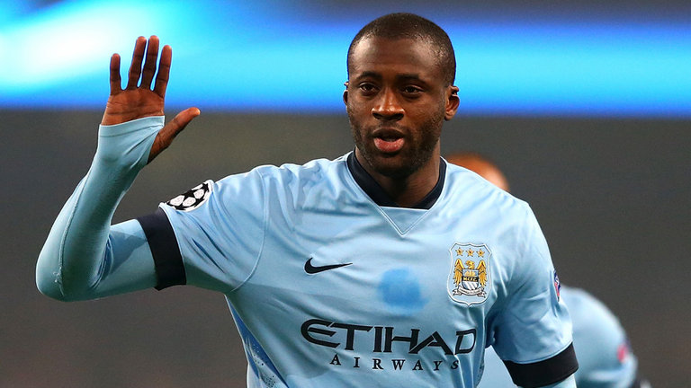
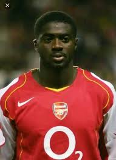
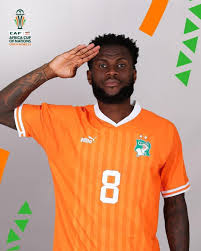

COSTA DE MARFIL
La potencia física africana arriba al certamen desplegando un juego veloz, vistoso y dinámico, con un plantel renovado que brilla en los mejores clubes del continente europeo.




Asombraron al planeta al clasificar consecutivamente a Alemania 2006, Sudáfrica 2010 y Brasil 2014, plantando cara en los recordados "grupos de la muerte".
Han consolidado su jerarquía en el continente africano conquistando tres Copas de África de Naciones, la más reciente como flamantes anfitriones con un orgullo inquebrantable.
Clasificaron al certamen dominando de punta a punta su zona eliminatoria de la CAF gracias a un poderío goleador implacable tanto de locales como de visitantes.
CAF (África)
Los Elefantes
Superar la fase de grupos por primera vez. Con una plantilla atlética y disciplinada, los marfileños buscan meterse por primera vez en las instancias de eliminación directa.